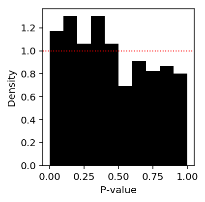
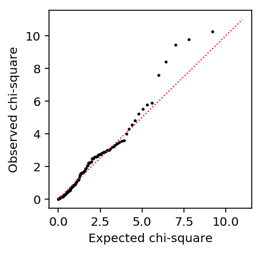

Differential expression based on distribution deconvolution
Table of Contents
Introduction
For gene \(j\), consider the generative model for counts \(x_i, i=1, \ldots, n\):
\[ x_i \sim \mathrm{Pois}(s_i \lambda_i) \]
\[ \lambda_i \sim g_{z_i}(\cdot) \]
where \(z_i\) denotes group membership.
How do we use this model to test for differential expression?
Setup
import numpy as np import pandas as pd import scipy.stats as st import scmodes import scqtl.simple
%matplotlib inline %config InlineBackend.figure_formats = set(['retina'])
import matplotlib.pyplot as plt plt.rcParams['figure.facecolor'] = 'w'
Methods
Deconvolution-based test
In the simplest case, suppose \(g_k = \delta_{\mu_k}\). Then,
\[ \hat\mu_k = \frac{\sum_i [z_i = k] x_i}{\sum_i [z_i = k] s_i} \]
This suggests a simple likelihood ratio test, comparing the null model
\[ x_i \sim \mathrm{Pois}(s_i \mu_0) \]
against an alternative model:
\[ x_i \sim \mathrm{Pois}(s_i \mu_{z_i}) \]
More generally, we can compare the null model:
\[ x_i \sim \mathrm{Pois}(s_i \lambda_i) \]
\[ \lambda_i \sim g_0(\cdot) \]
against an alternative model:
\[ x_i \sim \mathrm{Pois}(s_i \lambda_i) \]
\[ \lambda_i \sim g_{z_i}(\cdot) \]
In the general case, it will not be true that \(-2 \ln(l_0 - l_1) \sim \chi^2_1\). However, for the case where \(g\) is assumed to be Gamma distributed, it will be \(\chi^2_1\) or \(\chi^2_2\), depending on whether we allow dispersions to vary across groups also.
Results
Idealized simulation
Look at a case where log-transform fails.
np.random.seed(0) N = 100 onehot = np.zeros((2 * N, 2)) onehot[:N, 0] = 1 onehot[N:, 1] = 1 s = onehot.dot(np.array([1e5, 2e5])) mu = 1e-5 llrs = [] pvals = [] for trial in range(1000): x = np.random.poisson(lam=s * mu) mu0 = x.sum() / s.sum() mu1 = x[:N].sum() / s[:N].sum() mu2 = x[N:].sum() / s[N:].sum() llr = st.poisson(mu=mu0).logpmf(x).sum() - st.poisson(mu=onehot.dot(np.array([mu1, mu2]))).logpmf(x).sum() llrs.append(llr) llrs = np.array(llrs)
Look at the QQ plot.
plt.clf() plt.gcf().set_size_inches(3, 3) plt.scatter(st.chi2(1).ppf(np.linspace(0, 1, llrs.shape[0])), np.sort(-2 * llrs), c='k', s=2) plt.plot([0, 11], [0, 11], c='r', lw=1, ls=':') plt.xlabel('Expected chi-square') plt.ylabel('Observed chi-square')
Text(0, 0.5, 'Observed chi-square')
Look at the histogram of p-values.
plt.clf() plt.gcf().set_size_inches(3, 3) plt.hist(st.chi2(1).sf(-2 * llrs), np.linspace(0, 1, 11), density=True, color='black') plt.axhline(y=1, lw=1, ls=':', c='r') plt.xlabel('P-value') plt.ylabel('Density') plt.tight_layout()
Realistic null simulation
Take a real homogeneous data set (sorted cells from Zheng et al. 2017), and randomly partition samples into two groups.
cd8 = scmodes.dataset.read_10x('/project2/mstephens/aksarkar/projects/singlecell-ideas/data/10xgenomics/cytotoxic_t/filtered_matrices_mex/hg19/', return_df=True) s = cd8.sum(axis=1)
np.random.seed(0)
z = np.random.uniform(size=cd8.shape[0]) < 0.5
z.mean()
0.5071015770398668
Point-mass deconvolution
Deconvolve gene expression assuming \(g\) is a point mass (counts are marginally Poisson distributed). Naively, this should work because the data are informative about the mean.
def de(x, s, z): """Return LRT p-value x - counts (n,) s - size factors (n,) z - boolean group assignment (n,) """ mu0 = x.sum() / s.sum() mu1 = x[z].sum() / s[z].sum() mu2 = x[~z].sum() / s[~z].sum() onehot = pd.get_dummies(z) llr = st.poisson(mu=mu0).logpmf(x).sum() - st.poisson(mu=onehot.dot(np.array([mu1, mu2]))).logpmf(x).sum() return pd.Series({'mu0': mu0, 'mu1': mu1, 'mu2': mu2, 'llr': llr, 'p': st.chi2(1).sf(-2 * llr)})
de_res = cd8.apply(de, axis=0, args=(s, z)).T
plt.clf() plt.gcf().set_size_inches(3, 3) plt.hist(de_res.loc[:,'p'], np.linspace(0, 1, 11), density=True, color='black') plt.axhline(y=1, lw=1, ls=':', c='r') plt.xlabel('P-value') plt.ylabel('Density') plt.tight_layout()

Report the proportion of genes for which the null model fit better than the alternative model.
(de_res['llr'] > 0).mean()
0.6529284164859002
Look at the gene where the null model did best against the alternative.
gene_info = pd.read_csv('/project2/mstephens/aksarkar/projects/singlecell-qtl/data/scqtl-genes.txt.gz', sep='\t', index_col=0)
k = de_res['llr'].idxmax() x = cd8.loc[:,k] gene_info.loc[k]
chr hs15 start 69745123 end 69748255 name RPLP1 strand + source H. sapiens Name: ENSG00000137818, dtype: object
Look at the deconvolved distributions for this gene. Superimpose the Poisson point-mass estimates for the two groups (dotted lines), and the Gamma mean estimate (dashed line).
plt.clf() fig, ax = plt.subplots(2, 1) fig.set_size_inches(6, 4) ax[0].hist(x[z], bins=np.arange(x.max() + 1), alpha=0.6, color='k', label='Group 1') ax[0].hist(x[~z], bins=np.arange(x.max() + 1), alpha=0.6, color='r', label='Group 2') ax[0].legend(frameon=False) ax[0].set_xlabel('Num mols') ax[0].set_ylabel('Num cells') for c, m in zip(plt.get_cmap('Dark2').colors, ['Gamma', 'ZIG', 'Unimodal', 'ZIEF', 'NPMLE']): ax[1].plot(*getattr(scmodes.deconvolve, f'fit_{m.lower()}')(x, s), color=c, lw=1, label=m) ax[1].axvline(x=scqtl.simple.fit_nb(x, s)[0], c=plt.get_cmap('Dark2').colors[0], ls='--', lw=1) ax[1].axvline(x=de_res.loc[k, 'mu1'], c='k', ls=':', lw=1) ax[1].axvline(x=de_res.loc[k, 'mu2'], c='r', ls=':', lw=1) ax[1].set_xlabel('Latent gene expression') ax[1].set_ylabel('CDF') ax[1].legend(frameon=False) fig.tight_layout()
Check whether also allowing dispersions to vary across groups fixes this gene.
llr = scqtl.simple.fit_nb(x, s)[-1] - (scqtl.simple.fit_nb(x[z], s[z])[-1] + scqtl.simple.fit_nb(x[~z], s[~z])[-1])
llr, st.chi2(2).sf(-2 * llr)
(-2.176938147920737, 0.11338817750598136)
Gamma deconvolution
Deconvolve gene expression assuming group-specific Gammas under the alternative.
def fit_nb_collapse(x, s): """Return NB or Poisson solution, whichever is more sensible""" try: res = scqtl.simple.fit_nb(x, s) except: # Failure to converge res = scqtl.simple.fit_pois(x, s) # Converged to solution with large inverse overdispersion, so log likelihood # is nonsense if res[-1] > 0: res = scqtl.simple.fit_pois(x, s) return res def de_nb(x, s, z): """Return LRT p-value x - counts (n,) s - size factors (n,) z - boolean group assignment (n,) """ res0 = fit_nb_collapse(x, s) res1 = fit_nb_collapse(x[z], s[z]) res2 = fit_nb_collapse(x[~z], s[~z]) llr = res0[-1] - (res1[-1] + res2[-1]) return pd.Series({'mu0': res0[0], 'mu1': res1[0], 'mu2': res2[0], 'llr': llr, 'p': st.chi2(2).sf(-2 * llr)})
de_nb_res = cd8.sample(n=100, axis=1, random_state=1).apply(de_nb, axis=0, args=(s, z)).T
Look at the histogram of p-values.
plt.clf() plt.gcf().set_size_inches(3, 3) plt.hist(de_nb_res['p'], np.linspace(0, 1, 11), density=True, color='black') plt.axhline(y=1, lw=1, ls=':', c='r') plt.xlabel('P-value') plt.ylabel('Density') plt.tight_layout()
Look at the QQ plot.
plt.clf() plt.gcf().set_size_inches(3, 3) plt.scatter(st.chi2(2).ppf(np.linspace(0, 1, de_nb_res.shape[0])), np.sort(-2 * de_nb_res['llr']), c='k', s=2) plt.plot([0, 11], [0, 11], c='r', lw=1, ls=':') plt.xlabel('Expected chi-square') plt.ylabel('Observed chi-square')
Text(0, 0.5, 'Observed chi-square')

Follow up
Joyce Hsiao reports that commonly used count-based methods (deSeq2, edgeR) do not successfully control Type 1 error.
Why do we see a relatively simple count-based approach adequately controlling Type 1 error here?
- We are comparing much larger groups
- We are not shrinking dispersion parameters across genes